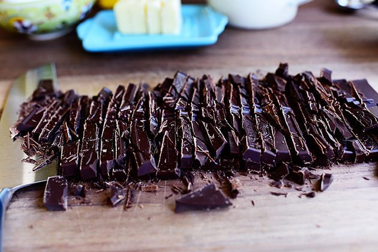
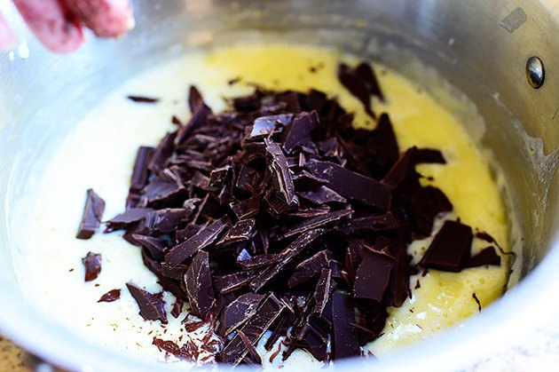
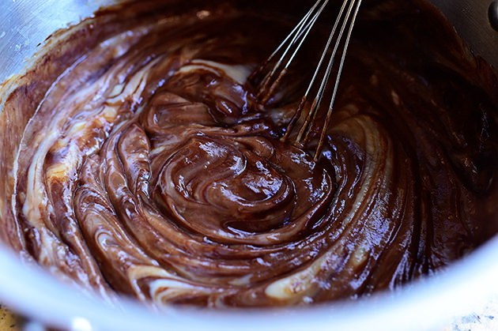
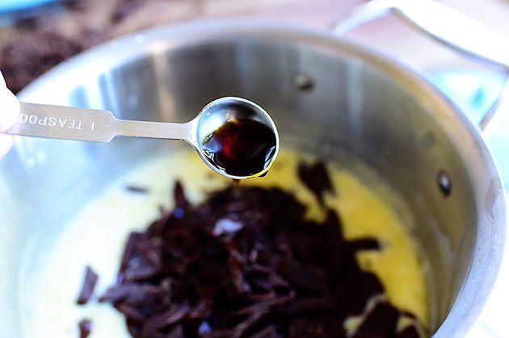
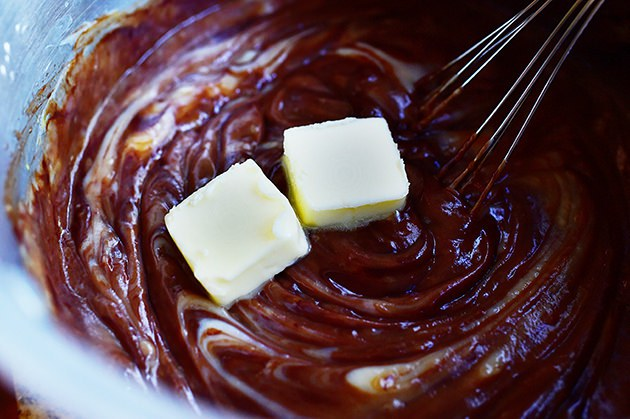
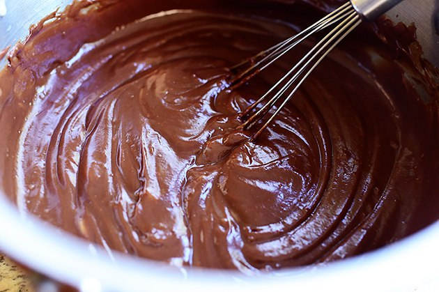

Chokladpudding
Tid att laga: 15 minuter | Total tid: 4 timmar
Svårighet: Lätt | Serveringar: 6 glas
Ingredienser
350 gram (3.5 deciliter) strösocker
32 gram (4 matskedar) majsstärkelse
1.5 gram (0.25 teskedar) salt
700 gram (7 deciliter) mjölk
4 äggulor
100 gram (ca 2 deciliter) choklad
8.5 gram (2 teskedar) vaniljextrakt
28 gram (2 matskedar) normalsaltat smör
Verktyg
Decilitermått, matskedsmått och teskedsmått(eller en våg om du vill vara helt exakt)
Matsked, ätar-sorten
Kniv
Skärbräda
Medelstor kastrull
Två skålar
Visp
Slickepott
6 Glas
1. Som förberedning; börja med att ta fram alla ingredienser och verktyg som du behöver. Ta sedan kniven och skära upp chokladen. Därefter ta fram äggen och separerar äggulorna från äggvitan.
2. Ta din medelstora kastrull och ha i sockret, saltet och majsstärkelsen och blanda försiktigt.
3. Härnäst häll i mjölken, 3% fetthalt eller högre. Blanda.
4. Ha i äggulorna du förberedde tidigare och blanda i dem ordentligt. Se till att få bort alla klumpar.
5. Värm upp blandningen på spisen över medelvärme. Blanda försiktigt men konstant.
6. Efter ett tag kommer blandningen börja hetta upp och tjockna. Var bered på att ta
bort puddingen från den heta plattan fort.
7. Ha i chokladen och vaniljextrakten i puddingen så de kan blandas i ordentligt. När chokladen är helt smält, blanda i smöret.
8. När smöret har smällt är puddingen så gott som klar. Häll upp den i 6 dessertglas (eller gör en paj utav den som i originalreceptet) och ställ in kopparna i kylskåpet utan att täcka dem. Denär helt klar efter 4 timmar.
Börja med att skära upp chokladen i små bitar. Personligen föredrar jag att använda mörk choklad; runt 70% mörk, men du kan använda vilken choklad du än vill. Experimentera!

Ta fram två skålar så du kan separera äggulorna från äggvitan utan att kasta något. Äggvitan kan man använda i maränger och efterrätter som du vill ha extra fluffiga.
Ta fram en medelstor kastrull, ha i sockret, majsstärkelsen och saltet. (I bilden av saltet ser det ut som det är en halv tesked men det är fel; du ska bara ha i ¼ tesked salt i puddingen).
Blanda ingredienserna försiktigt! Majsstärkelsen dammar väldigt lätt och man kan lätt få det över hela köket om man inte är försiktig.
Härnäst häll i mjölken. Snälla använd mjölk med 3% fetthalt eller högre, annars så kommer pudding inte få lika krämig konsistens som du vill ha den.
Blanda äggulorna i blandningen och se till att få bort alla klumpar.
Värm upp blandningen på spisen över medelvärme. Blanda försiktigt men konstant. Efter ett tag kommer blandningen börja hetta upp och tjockna. Det kommer kännas som det tar evigheter i början…
Men innan du vet ordet av så kommer blandningen börja koka upp! Så fort som den börjar bubbla upp och tjockna måste man ta bort kastrullen från hettan.

Kommer du ihåg chokladen du skärde upp i början? Nu måste du skynda dig och ha i chokladen och vaniljen i puddingen så att de kan blandas i ordentligt.
 Nu kommer det sista ingredienserna! Blanda i vaniljextrakten och smöret tills smöret har helt smält.
 Voíla! Nu har du chokladpudding! Den är dock fortfarande varm…
Vilket är därför du nu häller upp puddingen i glas och ställer in kopparna i kylskåpet; utan att täcka dem. 4 timmar av väl värd väntan och pudding är redo att avnjutas!